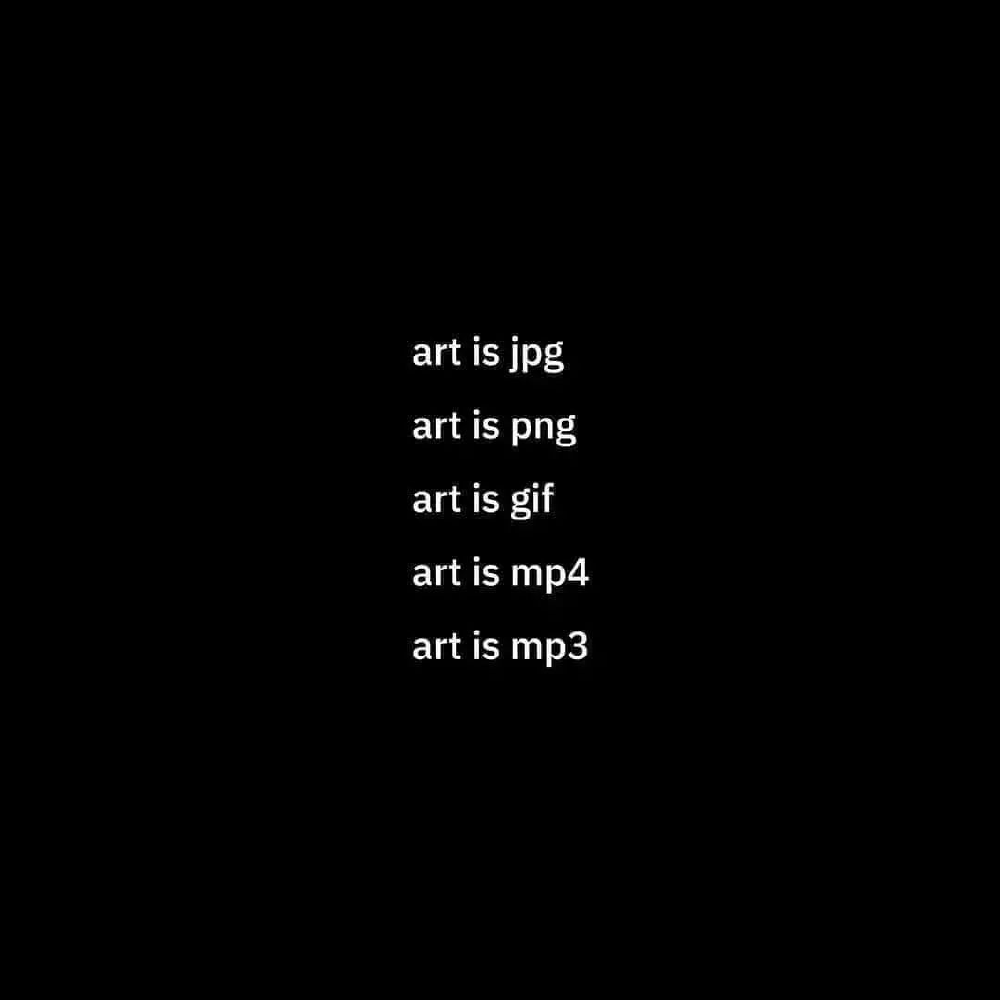
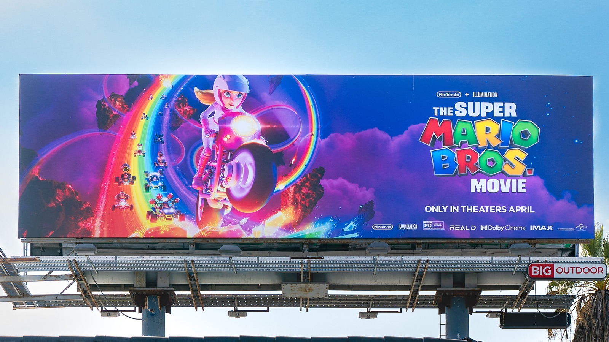

On this page

JPG (Joint Photographic Experts Group)
-
File Extension: .jpg or .jpeg

-
Description: JPEG. popular image format for photographs and complex images. It uses lossy compression, meaning it reduces file size by removing some image data like EXIF data, which can result in some loss of image quality.
- Pixel Based
PNG (Portable Network Graphics)

File Extension: .png
Description: PNG is a widely used image format for graphics and images with transparency support. It uses lossless compression, which preserves image quality but may result in larger file sizes compared to JPEG.
- Pixel Based
GIF (Graphics Interchange Format)

File Extension: .gif
Description: GIF is an image format primarily used for short animations and simple graphics. It supports transparency and is limited to 256 colors, making it less suitable for photographs but ideal for simple animations.
- Pixel Based
SVG (Scalable Vector Graphic)
- File Extension: .svg
- Description: SVG is a vector graphics format that uses XML-based code to describe images. It's resolution-independent and can be scaled without loss of quality. It’s non pixel based and relies on just two colours, stroke and fill with the stroke being the exterior line of the shape and the fill being the internals. SVG files are often used for logos, icons, and other graphics. In essence, SVG is based on the mathematic principals of fill colour and stroke colour. This is why it can be referred to as line art, because it’s a vector.
-
Vector Based (becomes picture)

WEBP (Web Picture)

- File Extension: .webp
- Description: Google created the WebP file format to make online images less bulky. With significantly reduced photo and graphic sizes, websites load faster and give users a better experience. Learn more about how the WebP file format works.
- Pixel Based
- WebP supports transparency (alpha channel), similar to PNG, allowing images with transparent backgrounds or semi-transparent elements. Both lossy and lossless WebP images can include an alpha channel.
TIFF (Tagged Image File Format)

- File Extension: .tiff or .tif
- Description: TIFF is super high quality format often used in professional for printing and publishing. It supports lossless compression and can store multiple layers, making it suitable for preserving image quality in various contexts. It’s amazing powerful but massive. Do not use for web design ever.
- Pixel Based
